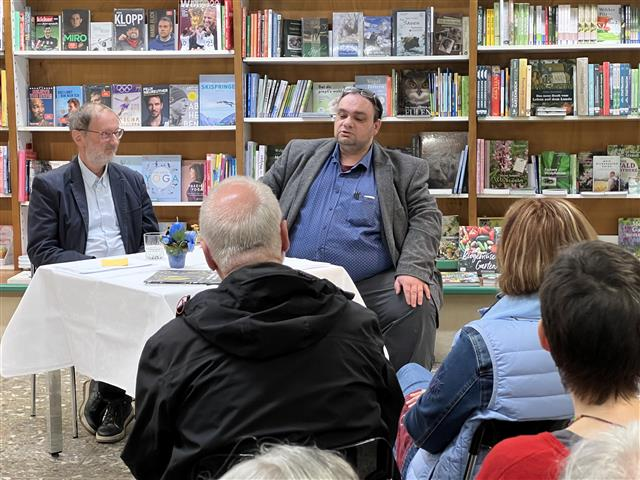
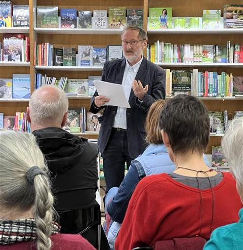

.jpg)
Der Buchtitel mit der Arbeit „Lichtwald" von Beate Debus.
Nach dem auch pandemiebedingten langsamen Wachsen dieses Lyrikprojektes konnte am 17. März 2022 der Gedichtband „Windgras" von Holger Uske im Buchhaus Suhl zur Premiere gebracht werden. Das Buch vereint 82 neue Gedichte, darunter die fünf Zyklen „Lauschen", „Gehen", „Schweben", „Leugnen" und „Leuchten". Lektor André Schinkel gruppierte die Arbeiten zu sechs Kapiteln, wovon „Windgras" ausschließlich Gedichte zu Bildern von Beate Debus enthält. Vor jedem Kapitel ist eine weitere künstlerische Arbeit von ihr abgedruckt.
Mit der in der Rhön beheimateten Holzbildhauerin Beate Debus verbindet Uske eine langjährige produktive künstlerische Freundschaft. Nachfolgend ein paar Auszüge und Blicke in das Buch.
„So sehr diese Texte Einkehr sind, Innenschau, so sehr hören sie nicht auf, die Schönheit dieses Wandelsterns im Kleinen wie im Großen zu preisen, das Wunder des Schauens und Staunens, die Liebe und Schönheit, die Anverwandlung zu feiern." (André Schinkel, Nachwort)
„Es ist einer dieser selten gewordenen Momente, in denen man sich die Augen reiben möchte ob der wiedergewonnenen Möglichkeit, Kunst livehaftig konsumieren zu dürfen. Und die Ohren auch. Was Holger Uske, der in Sachsen geborene und in Suhl angekommene Autor hören lässt, berührt die Seele. Das eigene Ich. Auch das Ich des anderen. Es scheinen innere Reisen zu sein, die sich zwischen den Buchdeckeln des neuen Lyrikbandes mit dem Titel ‚Windgras' auf 124 Seiten versammeln. Selbst- und Zwiegespräche über die kleinen Wunder des Lebens, die große sind, wenn sie nur gesehen und erfühlt werden." (Heike Höchtemann, Freies Wort, 19.3.2022)
Windgras
Jetzt kann ich die Halme
Verstehen. Sie flüstern mir
Von Mauerritzen
Von Furchen, die sie gern
Besetzen, Eroberer
Des harten Steins
Der seine heißen Flächen
Ihrem Samen bietet
Und sichere Verstecke
Kühl und feucht
Jetzt kann ich
Die winzigen Rufe hören
Koboldpfiffe
Eidechsenschlurfen
Zwischen stammstarken Halmen
Wind schließt die Türen
Auf und zu. Und ich
Ein Riese im Unterholz
Darf Gast bei ihnen sein

Lektor André Schinkel im Gespräch mit dem Autor zur Buchpremiere in Suhl. Foto: Manuela Hahnebach

Foto von der Premierenlesung, Buchhaus Suhl 2022
Über deine Fluren
Ich atme dich im Wind
Der über Täler tollt und lange
Helle Wellen webt am Hang
Hinter jedem Wimpernschlag
Der Bäume spür' ich dich
Aus den Matten zwischen Wurzeln
Werden Stundenbetten
Von Erinnerungen hell
Auch die sattgetränkte
Dunkle Erde spiegelt dich
Und mich. Halme wachsen
Wolken fachen an
Den Uhrenschlag vom Dorf
Atem steigt und kann sich teilen
Und die Luft ist wie ein Lied
Das auf unsern Leibern spielt
In Suhl
Die stürzenden Hänge der Häuser
In meiner Stadt: von Eisen beschwert
Das immer wieder den Boden durchbricht
Schicht um Schicht Geschichte
Eingeebnet, neu begrünt, durchstoßen
Von Waffen: Gewinn für alle!
Fassadengefechte. Wortbrandung
Wem gehört das Sagen?
Ausritte auf Speerspitzen
Spaziergänge auf Messers Schneide
Auch ich bin ein Meister
Des Schweigens. Manchmal nur
Stürzen die Hänge der Häuser auf mich
Rufen die dichten Wälder nach Aufruhr
Wickeln die Wege der Berge mich ein
Ach, es ist – Und ich sage: Aber
Es könnte auch anders gewesen
Sein. Und werden